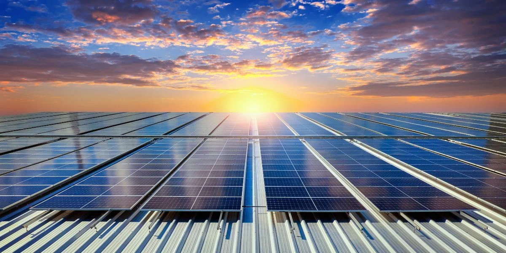
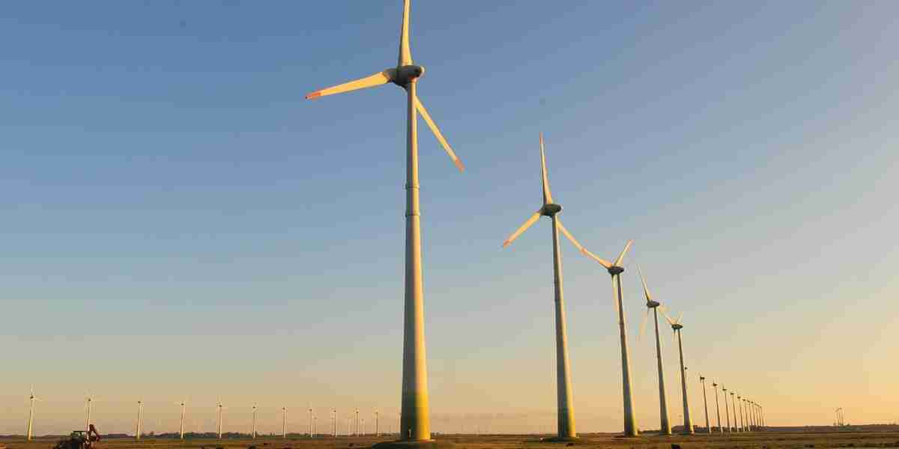

O que são Matrizes Energéticas?
As matrizes energéticas representam a distribuição das fontes de energia utilizadas por um país, região ou setor. Elas são essenciais para o planejamento de políticas públicas e para a transição para fontes mais sustentáveis.

